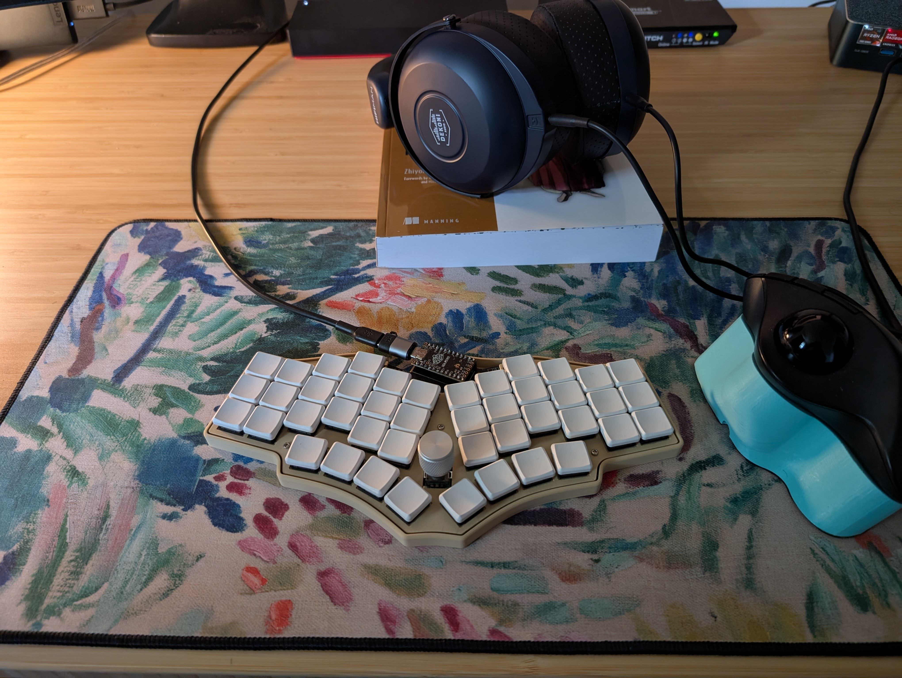

Howdy!
You've made you’re way to the portfolio page of Michael Governanti. The intent of this portfolio is to share a little bit about myself and my work.

I enjoy playing dubious lines in any given game of chess.
my Chess.com profileIn my free time I enjoy a bit of rock climbing.
Bash
Go
Java
JavaScript
PowerShell
Rust
Zig
My mediocre leetcode profileI have an ever evolving collection of ergo keyboards. Currently I am typing on a choctopus44

personal choctopus44 repoPhiladelphia, PA | 717-669-7166 | mag574@drexel.edu
Resourceful and innovative learner with 4 years of experience in security operations, systems engineering, and IT security management. Proven track record of implementing supportable solutions and enhancing security. Strong communicator and collaborator who enjoys improving business processes within a team. Knows how to meaningfully read an error message.
Proficiencies: Asset Management | Incident Management | Network Monitoring | Programming & Scripting
Languages: Ansible | ARM | Bash | Go | JavaScript | PowerShell | Python
Technologies: Azure | Digital Ocean | Git | Grafana | Linux | MongoDB | Prometheus | Office Suite & CRMs
Bachelor of Science in Cyber Security and Information Technology, Drexel University, 2024–2026 — Current GPA: 4.0
Associate of Science in Computer Information Security, Harrisburg Area Community College, 2021–2024 — GPA: 4.0
CompTIA Security+
Multiplayer Chess Website — GitHub Repo
Hosted on Digital Ocean with Ansible IaC and observability stack (Alloy, Grafana, Loki, Prometheus)
Junior Site Reliability Engineer
WebstaurantStore | Remote | June 2023 – November 2024
Developed Azure resource management processes and a portable app with Entra integration to deploy custom VMs for phishing investigations.
Contributed to IaC, CaC, and internal Go services; reviewed code, refactored legacy components, and updated projects to Go 1.23.
Improved observability by instrumenting apps, identifying operational needs, and building custom Prometheus exporters.
Handled ticket queue projects, including automation and monitoring improvements for internal IT departments.
Systems Analyst
Children’s Hospital of Philadelphia | Philadelphia, PA | August 2021 – May 2023
Improved network performance by managing traffic exception queues and DICOM routing applications.
Led deployment of enterprise apps across 300+ workstations, scripting enhanced data migration workflows.
Resolved DICOM discrepancies and trained radiology staff to enhance diagnostic accuracy and data integrity.
Managed patching and upgrades for 80+ servers, strengthening cybersecurity and system performance.